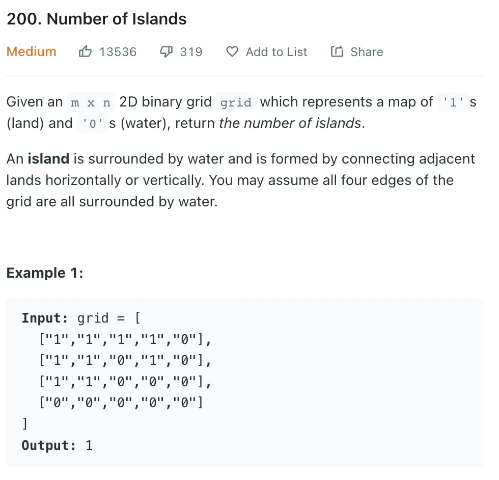
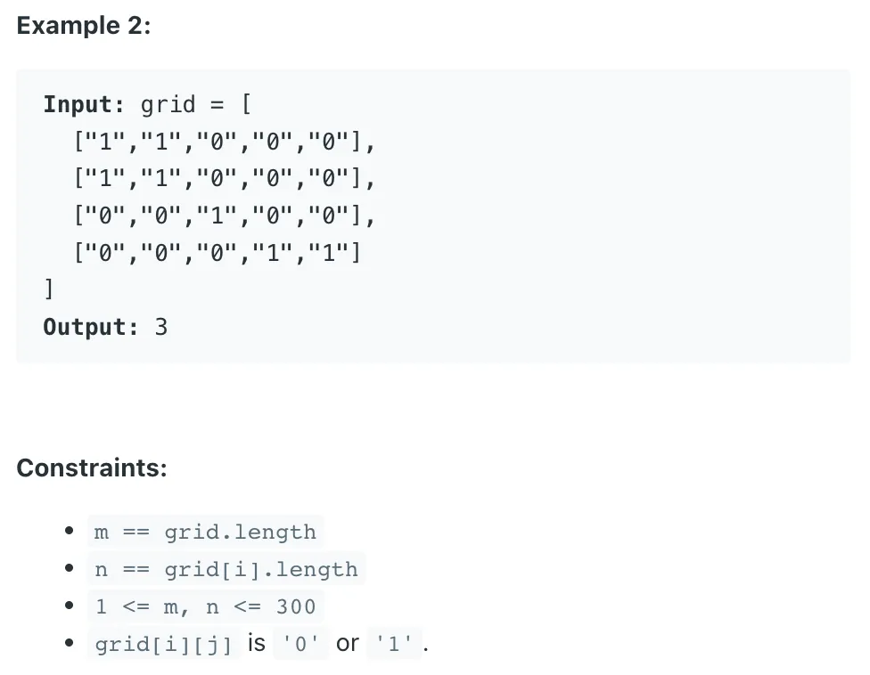

200. Number of Islands
考過的公司：Amazon、Google、Shopee
Question


✍🏽 My Solution
Runtime: 4 ms, faster than 66.98% of Java online submissions for Number of Islands. Memory Usage: 58.2 MB, less than 13.94% of Java online submissions for Number of Islands.
class Solution {
private int m;
private int n;
public int numIslands(char[][] grid) {
int count = 0;
m = grid.length;
n = grid[0].length;
for (int i = 0; i < m; i++) {
for (int j = 0; j < n; j++) {
if (grid[i][j] == '1') {
count++;
dfs(grid, i, j);
}
}
}
return count;
}
private void dfs(char[][] grid, int i, int j) {
if (i < 0 || j < 0 || i >= m || j >= n || grid[i][j] != '1') {
return;
}
grid[i][j] = '2';
dfs(grid, i + 1, j);
dfs(grid, i - 1, j);
dfs(grid, i, j + 1);
dfs(grid, i, j - 1);
}
}
🧠 Thought Process
-
Why did I choose this particular implementation?
- 參考leetcode
- edge case: 二維陣列的長度範圍是多少
-
思路：
用DFS去遍歷整個二維數組，每發現一個島嶼，就開始DFS 如果是島嶼先將數量加1，就加入result 遍歷的過程中將島嶼改成2，避免走回頭路
-
What is the time/space complexity of my solution? How do I know?
- time O(mm)
- space: O(mn)
Solution #1 [BFS]
Runtime: 4 ms, faster than 69.38% of Java online submissions for Number of Islands. Memory Usage: 49.4 MB, less than 99.86% of Java online submissions for Number of Islands.
class Solution {
private int m;
private int n;
public int numIslands(char[][] grid) {
int count = 0;
m = grid.length;
n = grid[0].length;
for (int i = 0; i < m; i++) {
for (int j = 0; j < n; j++) {
if (grid[i][j] == '1') {
count++;
bfs(i, j, grid);
}
}
}
return count;
}
private void bfs(int i, int j, char[][] grid) {
Queue<Integer> queue = new LinkedList<Integer>();
queue.offer(i * n + j);
while (!queue.isEmpty()) {
int cur = queue.poll();
int row = cur / n;
int col = cur % n;
//已经标记过就结束，这句很关键，不然会把一些节点重复加入
if(grid[row][col] == '2'){
continue;
}
grid[row][col] = '2';
//将上下左右连通的 1 加入队列
if (row != (m - 1) && grid[row + 1][col] == '1') {
queue.offer((row + 1) * n + col);
}
if (col != (n - 1) && grid[row][col + 1] == '1') {
queue.offer(row * n + col + 1);
}
if (row != 0 && grid[row - 1][col] == '1') {
queue.offer((row - 1) * n + col);
}
if (col != 0 && grid[row][col - 1] == '1') {
queue.offer(row * n + col - 1);
}
}
}
}
Explanation (in my words)
- How does their solution work?
- 二维数组/多维数组转换为一维
- 之後要加進去queue的索引忘了上下左右
- 忘了要把標記過的continue
- 邊界處理沒做好
- What is the space/time complexity of their solution?
- time: O(mn)
- space: